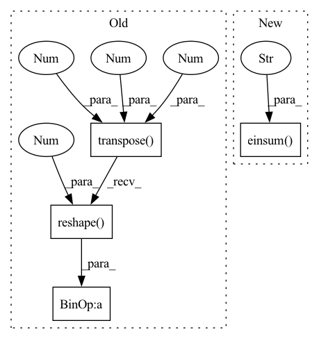

Pattern ID :12213

Before Change
num_filters, _, kernel_height, kernel_width = weight.shape
_, _, output_height, output_width = grad_output.shape
grad_weight = (grad_output.transpose(1, 2, 3, 0).reshape(num_filters, -1) @ x_cols.T).reshape(weight.shape)
grad_x = np.zeros((batch_size, in_channel, im_height, im_width), dtype=grad_output.dtype)
After Change
num_filters, _, kernel_height, kernel_width = weight.shape
_, _, output_height, output_width = grad_output.shape
grad_weight = np.einsum("ikYX, ijYXyx -> kjyx", grad_output, x_reshaped)
grad_x = np.zeros((batch_size, in_channel, im_height, im_width), dtype=grad_output.dtype)
for k in range(output_height * output_width):
In pattern: SUPERPATTERN
Frequency: 3
Non-data size: 4
Instances
Fragment ID: 41378741
Project Name: pabannier/nanograd
Commit Name: 68bd9e42bee6dd7a158bcf891fc6aa826e0f6821
Time: 2021-02-02
Author: pierreantoine.bannier@gmail.com
File Name: nanograd/nn/ops_cpu.py
M Class Name: AnonimousClass
N Class Name: AnonimousClass
M Method Name: conv2d_backward(5)
N Method Name: conv2d_backward(5)
M Parent Class:
N Parent Class:
M File Name: nanograd/nn/ops_cpu.py
N File Name: nanograd/nn/ops_cpu.py
M Start Line: 243
M End Line: 248
N Start Line: 242
N End Line: 247
'>
Before Change
F, _, KL = weight.shape
_, _, OL = grad_output.shape
grad_out_reshaped = grad_output.data.transpose(1, 2, 0).reshape(F, -1)
grad_weight = (grad_out_reshaped @ x_cols.T).reshape(weight.shape)
grad_x_cols = weight.data.reshape(F, -1).T @ grad_out_reshaped
grad_x_cols.shape = (C, KL, N, OL)
grad_x = col2im(grad_x_cols, x.shape, 1, KL, 0, stride)
After Change
X = k % output_length
iX = X * stride
grad_x[:, :, iX:iX+kernel_length] += np.einsum("ik, kjy->ijy", grad_output[:, :, X], weight)
grad_x = grad_x.reshape((batch_size, in_channel, signal_length))
return grad_x, grad_weight
'>
Fragment ID: 41378740
Project Name: pabannier/nanograd
Commit Name: 442722b1830cdbf5fe8874edf3ecce602b3e9526
Time: 2021-02-02
Author: pierreantoine.bannier@gmail.com
File Name: nanograd/nn/ops_cpu.py
M Class Name: AnonimousClass
N Class Name: AnonimousClass
M Method Name: conv1d_backward(5)
N Method Name: conv1d_backward(5)
M Parent Class:
N Parent Class:
M File Name: nanograd/nn/ops_cpu.py
N File Name: nanograd/nn/ops_cpu.py
M Start Line: 224
M End Line: 234
N Start Line: 224
N End Line: 239
'>
Before Change
num_filters, _, kernel_length = weight.shape
_, _, output_length = grad_output.shape
grad_weight = (grad_output.transpose(1, 2, 0).reshape(num_filters, -1) @ x_cols.T).reshape(weight.shape)
grad_x = np.zeros((batch_size, in_channel, signal_length), dtype=grad_output.dtype)
After Change
num_filters, _, kernel_length = weight.shape
_, _, output_length = grad_output.shape
grad_weight = np.einsum("ikX, ijXx -> kjx", grad_output, x_reshaped)
grad_x = np.zeros((batch_size, in_channel, signal_length), dtype=grad_output.dtype)
for k in range(output_length):
'>
Fragment ID: 41378736
Project Name: pabannier/nanograd
Commit Name: 68bd9e42bee6dd7a158bcf891fc6aa826e0f6821
Time: 2021-02-02
Author: pierreantoine.bannier@gmail.com
File Name: nanograd/nn/ops_cpu.py
M Class Name: AnonimousClass
N Class Name: AnonimousClass
M Method Name: conv1d_backward(5)
N Method Name: conv1d_backward(5)
M Parent Class:
N Parent Class:
M File Name: nanograd/nn/ops_cpu.py
N File Name: nanograd/nn/ops_cpu.py
M Start Line: 224
M End Line: 229
N Start Line: 223
N End Line: 228